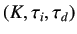

The aim of this experiment is to apply a PID controller to the Single Board Heater System.
The target group is anyone who has basic knowledge of control engineering.
Figure 5.1:
Xcos interface for this experiment
|
 |
Scilab is used with Xcos as an interface for sending and receiving data.
This interface is shown in figure 5.1. Heater current and fan speed are the two inputs to the system.
The inputs are provided in percentage of maximum output. The parameters related to PID controller
 can be set in Xcos.
In this experiment, the fan speed is kept constant. The output temperature profile, read by the sensor, is also plotted.
The data acquired in the process is stored on the local drive and is available to the user for further calculations.
Subsections
rokade
2017-04-23